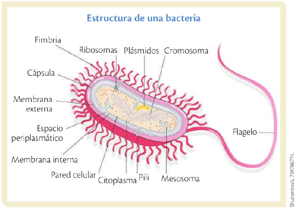
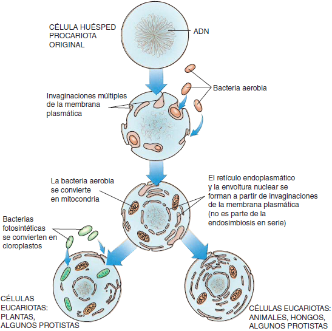
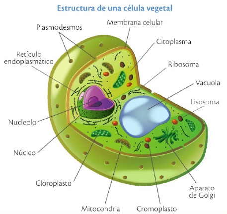
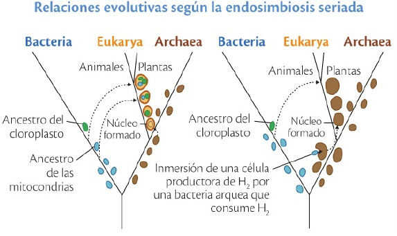
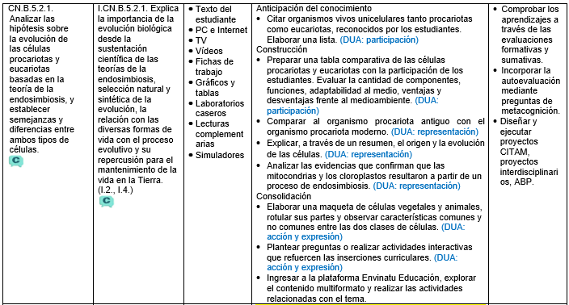

Evolución de las células procariotas y eucariotas
OG.CN.2. -O.CN.B.5.1. -O.CN.B.5.2. -CN.B.5.2.1. Analizar las hipótesis sobre la evolución de las células procariotas y eucariotas basadas en la teoría de la endosimbiosis, y establecer semejanzas y diferencias entre ambos tipos de células.

Antes de comenzar piensa, ¿qué has escuchado sobre las bacterias? Tal vez cuando te enfermas, cuando tomas un antibiótico o incluso al leer en un yogur la palabra ‘probióticos’. Ahora recuerda algo que seguro aprendiste en Educación General Básica: la simbiosis, esa relación en la que dos organismos diferentes conviven y, muchas veces, ambos se benefician, como las abejas y las flores o el pez que limpia a otro más grande.
Imagina, ¿y si esa simbiosis ocurriera a nivel microscópico, entre células? ¿Qué pasaría si una célula simple, como una bacteria, se uniera a otra y vivieran juntas hasta formar algo mucho más complejo? Hoy vamos a explorar esa transición que dio origen a las células eucariotas.
Desequilibrio cognitivo. ¿Qué organismos son más primitivos: las bacterias o las células animales?
{kind=link}
Teoría celular
La teoría celular es uno de los fundamentos de la biología moderna. Esta teoría afirma que:
todos los organismos vivos están compuestos por una o más células;
las reacciones químicas de un organismo vivo, incluidos los procesos que liberan energía y las reacciones biosintéticas, ocurren dentro de las células;
las células se originan de otras células;
las células contienen la información hereditaria de los organismos de los cuales son parte, y esta información pasa de células progenitoras a células hijas.
Toda la evidencia disponible indica que hay una continuidad ininterrumpida entre las primeras células primitivas que aparecieron sobre la Tierra y las células modernas y los organismos que ellas componen.
Existen dos tipos fundamentalmente distintos de células: las procariotas y las eucariotas. Entre los procariotas, a su vez, las características bioquímicas permiten reconocer dos grandes grupos: Bacteria y Archaea. Así, actualmente se reconocen tres grandes dominios que agrupan a los seres vivos: Bacteria, Archaea y Eukarya; los dos primeros agrupan procariotas unicelulares y coloniales y el último a todos los organismos formados por células eucariotas.
El registro fósil revela que los primeros organismos vivos eran células semejantes a los procariotas actuales. Los procariotas fueron las únicas formas de vida en nuestro planeta durante casi 2000 millones de años, hasta que aparecieron los eucariotas.
Si comparamos las células eucariotas con las procariotas, las eucariotas son evidentemente más complejas. Sin embargo, las numerosas semejanzas en su composición y funcionamiento no dejan dudas acerca de su parentesco.
Las células procariotas
Procariota viene del griego pro, antes, y karion, nuez (para referirse a una envoltura, en este caso, del núcleo celular). Son organismos unicelulares como bacterias y algunas arqueas. Su característica más representativa es que su material genético se encuentra libre dentro del citoplasma, sin una membrana que lo limite.
Componentes de las células procariotas
Son células simples, con pocos organelos, sin embargo, cumplen con sus funciones de crecimiento fisiológico y de reproducción. Algunas son autótrofas, es decir que mediante fotosíntesis o quimiosíntesis realizan su propia nutrición. Otras son heterótrofas, es decir que requieren adquirir los nutrientes del medio. En este grupo se encuentran las bacterias que llamamos patógenas y causan enfermedades. Los principales componentes de las células procariotas son:
La pared celular: cubierta externa que separa el interior de la célula con su entorno y la membrana plasmática hacia el interior de la pared. Poseen capa S de proteínas y glicoproteínas (proteínas conjugadas con azúcares simples).
El citoplasma: se forma de citosol gelatinoso al interior de la célula y las estructuras celulares suspendidas en él. No contiene organelos, pero sí una membrana que lo delimita.
El ADN: material genético de forma circular donde se encuentra la información genética. Adicionalmente hay la presencia de plásmidos (pequeños fragmentos de ADN circulares).
Pequeños ribosomas: sintetizan las proteínas que constituyen el andamiaje de la célula.
Algunas bacterias tienen estructuras especializadas en su superficie celular, las cuales les ayudan a moverse, adherirse a otras superficies o incluso intercambiar material genético, como los flagelos y fimbrias y las varillas llamadas pili, que sirven para intercambio de material genético.
La reproducción celular se realiza por bipartición o fisión binaria, esto quiere decir que una célula se divide dando lugar a dos células hijas, iguales a la madre.

{kind=link}
Células eucariotas
Eucariota viene del griego, verdadero, y karion , nuez (verdadero núcleo). Son células que conforman organismos pertenecientes al dominio Eukarya y sus correspondientes reinos Plantae, Animalia, Fungi y Protista. Su característica esencial es que el ADN de sus células se encuentra delimitado por una membrana nuclear. Son células mucho más especializadas y forman desde estructuras simples como organismos unicelulares, hasta organismos con tejidos y órganos bien diferenciados.
Origen y evolución de las células
No se sabe cómo apareció la primera célula en la Tierra, pero se acepta que su origen fue un fenómeno físico-químico.
Probablemente, la primera célula se originó gracias a la transformación de moléculas inorgánicas en orgánicas bajo unas condiciones ambientales adecuadas, produciéndose más adelante estos componentes orgánicos o biomoléculas que interactuaron y generaron estructuras de mayor complejidad, los coacervados. Estos aún eran acelulares, es decir, no células vivas, pero en cuanto alcanzaron la capacidad de autoorganizarse y perpetuarse, dieron lugar a un tipo de célula primitiva, descrita por el microbiólogo estadounidense Carl Woese, (1928-2012) como progenote, antecesor de los tipos celulares actuales. A partir de él, se dio lugar a variantes como procariotas, arqueas y bacterias.
En busca del ancestro común
La construcción de un árbol genealógico que refleje el parentesco de los tres principales grupos de organismos actuales (Bacteria, Archaea y Eukarya), sobre la base de datos comparativos de moléculas complejas como el ARN que forma parte de los ribosomas. Las estructuras en las que se sintetizan las proteínas: los ribosomas, muestra que ninguna de las tres ramas es anterior a las otras dos, aunque el registro fósil pone en evidencia el origen más reciente de los eucariotas. Las tres derivan de un único ancestro común, al que se ha denominado progenote, ancestro universal o LUCA (de sus iniciales en inglés, Last Universal Common Ancestor). Las diferencias existentes entre bacterias, archaeas y eucariotas serían el resultado de la evolución independiente de cada uno de estos grupos. Carl Woese, que ha propuesto este modelo, plantea que el proceso de divergencia temprana entre las tres ramas habría ocurrido durante un período de intenso cambio evolutivo en el que a los cambios en la información genética -las mutaciones- se les sumaba un intenso intercambio de información genética entre distintas poblaciones celulares (transferencia horizontal).
Endosimbiosis, un gran paso evolutivo
El origen de los primeros eucariotas en un mundo de procariotas fue una de las transiciones evolutivas principales, sólo precedida en orden de importancia por el origen de la vida.
Cómo ocurrió esta transición es objeto de ardientes discusiones. Una hipótesis que actualmente cuenta con un amplio grado de aceptación es que las células eucariotas, de mayor tamaño y más complejas, se originaron cuando ciertos procariotas se alojaron en el interior de otras células y dieron lugar en algunos casos a asociaciones estables.

Se especula que las mitocondrias provendrían de proteobacterias alfa, por ejemplo, las rickettsias y los plastos (cloroplastos y cromoplastos) de cianobacterias.
Las rickettsias son bacterias parásitas, consideradas organismos intermedios entre los virus y las bacterias.
{kind=link}
Varias líneas de evidencia sustentan la teoría endosimbiótica. Por un lado, es sugestivo que las mitocondrias contengan ADN propio y diferente del ADN nuclear, una única molécula continua o circular, semejante al ADN de las bacterias. Asimismo, muchas de las enzimas presentes en las membranas celulares de las bacterias también se encuentran en las membranas mitocondriales. Además, las mitocondrias sólo son producidas por otras mitocondrias, que se dividen dentro de la célula hospedadora. Recientemente, biólogos moleculares demostraron que ciertos genes que se encuentran en las mitocondrias tienen el misma origen evolutivo que genes de organismos procariotas.
De forma análoga, se cree que los cloroplastos se incorporaron cuando ciertos procariotas fotosintéticos fueron ingeridos por células eucariotas no fotosintéticas de mayor tamaño, que ya poseían núcleo y mitocondrias.
Se piensa que estas simbiosis habrían ocurrido en forma independiente en varios linajes y dado origen a los distintos grupos de eucariotas fotosintéticos modernos.
La mayor complejidad de la célula eucariota la dotó de un número de ventajas que finalmente posibilitaron la evolución de organismos pluricelulares o multicelulares. Las células eucariotas son más eficientes desde el punto de vista metabólico, dado que, debido a la presencia de membranas, las funciones se reparten en compartimientos específicos. Son de mayor tamaño y son capaces de llevar muchísima más información genética que la célula procariota, suficiente, por ejemplo, para especificar los caracteres básicos de una planta de roble o de un ser humano.
Competencia socioemocional. Los seres humanos debemos entender que debemos vivir una endosimbiosis con la naturaleza; es decir, ser parte de ella y no destruirla.

{kind=link}
En síntesis, las evidencias que confirman que las mitocondrias y plastos resultaron a través del proceso de endosimbiosis son las siguientes:
El tamaño de las mitocondrias es igual al tamaño de algunas bacterias.
Las mitocondrias y los cloroplastos tienen su propio ADN.
Ambos están cercados por una doble membrana. En una fagocitosis , la membrana interna sería la membrana plasmática original; la externa sería la membrana de la célula que la fagocitó.
La fagocitosis es un tipo de endocitosis por el cual algunas células (fagocitos y protistas) rodean con su membrana citoplasmática partículas sólidas y las introducen al interior celular.
Las mitocondrias y cloroplastos se dividen por fisión binaria, como las bacterias; mientras las células eucariotas se dividen por mitosis.
Gracias a la endosimbiosis, los organismos eucarióticos aprovechan de la condición de efectuar procesos metabólicos que evolucionaron originalmente en bacterias (como la respiración celular, producción de energía y fotosíntesis). Esta aptitud mejorada fomentó la selección natural de células mejor adaptadas; es decir, las células con simbiontes en su interior pudieron sobrevivir.

Los orígenes de la multicelularidad
Según el registro fósil, los primeros organismos multicelulares aparecieron hace apenas 750 millones de años. Se considera que los principales grupos de multicelulares (protistas pluricelulares -algas-, hongos, plantas y animales) evolucionaron a partir de diferentes eucariotas unicelulares. Las células de los organismos multicelulares modernos son muy semejantes a las de los eucariotas unicelulares: están limitadas por una membrana idéntica a la membrana celular de un eucariota unicelular y sus organelos comparten la misma estructura. Las células de los organismos multicelulares difieren de los eucariotas unicelulares en que cada tipo celular se especializa y lleva a cabo una función determinada. Sin embargo, cada una sigue siendo notablemente una unidad con mantenimiento autónomo.
Interdisciplinariedad. Biología y Tecnología. El estudio de la biología celular y la medicina han evolucionado gracias a la ayuda del microscopio; este permitió ver las células aumentadas miles de veces y le facilitó a la ciencia avanzar en ambos campos. Indaga cuál es la máxima potencia de un microscopio.
Reflexiona. Si no hubiera ocurrido la endosimbiosis, ¿habría sido posible la existencia de organismos multicelulares como plantas, animales y seres humanos?
